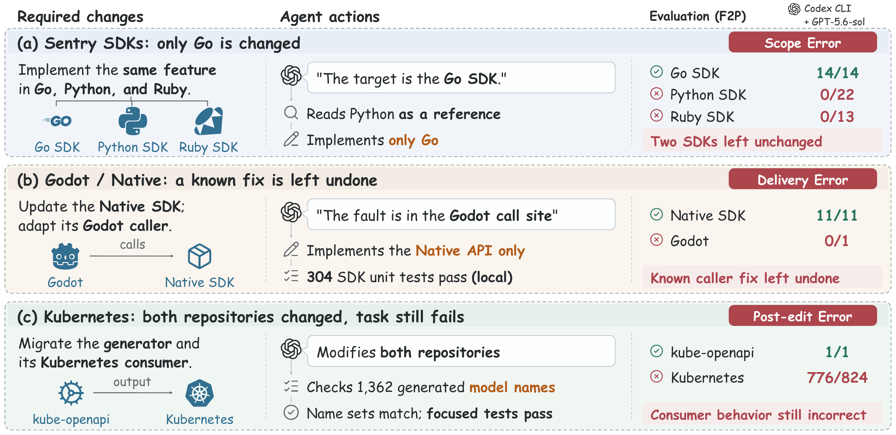
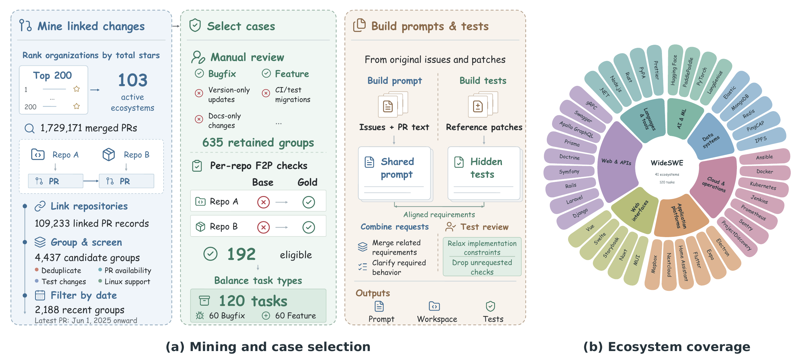
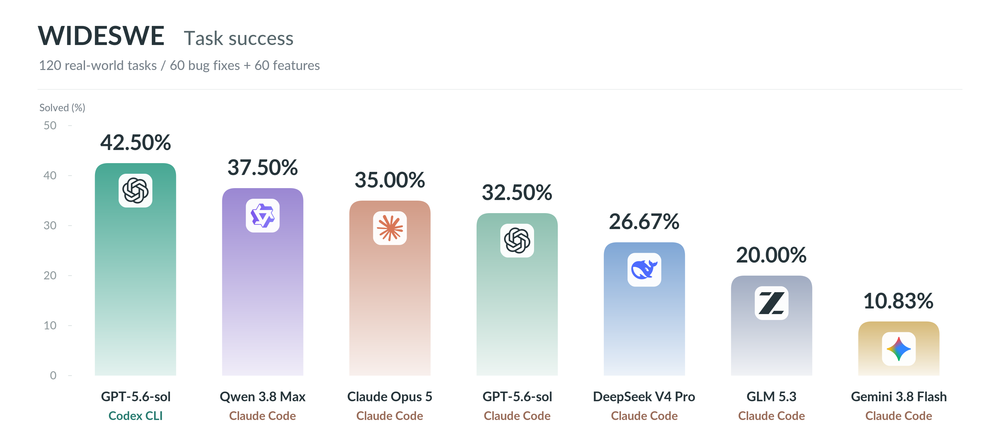

WideSWE
Can Coding Agents Coordinate
Changes Across Repositories?
1 Zhejiang University2 Tsinghua University
One shared request. Multiple repositories.
Can an agent complete every part?
01 / THE BENCHMARK
One request, across repositories.
A shared feature or bug fix can span multiple repositories. WideSWE brings together 120 real-world tasks across 41 software ecosystems, balanced between 60 bug fixes and 60 features. Each task pairs a shared request with a historical workspace and hidden tests.
Identify the scope
Determine which repositories need to change, with related repositories available as context.
Deliver the changes
Implement every repository-specific obligation of the shared feature or bug fix.
Satisfy the request
Pass the required behavior and regression checks in every target repository.

02 / CONSTRUCTION
From linked changes to executable tasks.
Real issues and pull requests establish the shared requirement. Historical snapshots and fail-to-pass checks make it executable.
- 01
Mine linked changes
Collect merged PRs across 103 ecosystems and group changes linked across repositories.
- 02
Review the request
Retain 635 groups addressing one shared feature or bug fix with substantive cross-repository changes.
- 03
Validate behavior
Executable validation and final review yield 192 eligible cases, with fail-to-pass tests for each target.
- 04
Balance the release
Select 120 tasks: 60 bug fixes and 60 features, covering 41 software ecosystems.
Shared prompts. Requirements are consolidated from original issues and PRs, without turning reference implementations into step-by-step solutions.
Reviewed hidden tests. Implementation-specific constraints and unrequested checks are removed while required behavior and regression checks are preserved.
Construction and ecosystem coverage 

03 / MAIN RESULTS
Progress is not completion.
The best-performing configuration fully solves 42.50% of tasks, while solving at least one target repository in 83.33%. Completing the shared request remains a challenge.
Task success (%) · Paper Table 1 · Every target repository must pass all required checks.

Results by task type
| Model | Agent | Bugfix | Feature | Overall |
|---|---|---|---|---|
| GPT-5.6-sol | Codex CLI | 41.67 | 43.33 | 42.50 |
| Qwen 3.8 Max | Claude Code | 48.33 | 26.67 | 37.50 |
| Claude Opus 5 | Claude Code | 41.67 | 28.33 | 35.00 |
| GPT-5.6-sol | Claude Code | 33.33 | 31.67 | 32.50 |
| DeepSeek V4 Pro | Claude Code | 38.33 | 15.00 | 26.67 |
| GLM 5.3 | Claude Code | 30.00 | 10.00 | 20.00 |
| Gemini 3.8 Flash | Claude Code | 21.67 | 0.00 | 10.83 |
04 / TRAJECTORY EVIDENCE
Where does completion break down?
Selected runs expose different gaps between understanding a shared request and delivering working changes.
Incomplete scope identification
Sentry SDKs
Codex CLI · GPT-5.6-sol
Shared requirement
Implement the same strict trace-continuation policy in the Go, Python, and Ruby SDKs.
Observed behavior
The agent treats Go as the target and reads Python code as a reference, but only Go receives a patch.
HIDDEN F2P CHECKS Passed / total
Reading a related repository does not ensure that its required changes are delivered.
Source: Appendix C.1. Selected execution trajectories, not aggregate model rankings.
05 / EXPLORE THE RELEASE
120 tasks. Real development work.
From SDKs and developer tools to cloud infrastructure and machine learning libraries.
RUN WIDESWE
Evaluate your coding agent.
Task definitions, historical revisions, container environments,
and evaluation harness in one open-source release.
CITATION
Cite WideSWE
@misc{wang2026wideswecodingagentscoordinate,
title={WideSWE: Can Coding Agents Coordinate Changes Across Repositories?},
author={Baoyi Wang and Xingliang Wang and Jinyang Wu and Keming Wu and Chen Zhi and Jianwei Yin},
year={2026},
eprint={2609.33382},
archivePrefix={arXiv},
primaryClass={cs.SE},
url={https://arxiv.org/abs/2609.33382},
}